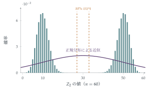

STEP II 2023、第11問
先に進む前に問題を読んでおこう。問題は、OCRが配布している2023年のSTEP問題一式（zipファイル）のSTEP IIに収録されている： www.ocr.org.uk/Images/707102-2023-past-papers.zip
導入
試験でカンニングをした学生や、職場で盗みをはたらいた従業員がどれくらいの割合でいるかを知るにはどうすればよいだろうか。直接たずねれば、多くの人は嘘をつくだろう。1965年、統計学者の Stanley Warner は巧妙な解決策を考案した。それが無作為化回答法（randomised response）である。各人はこっそりと硬貨を投げるかさいころを振り、その結果によって、デリケートな質問に正直に答えるか、その反対の質問に答えるかが決まる。質問者にはどちらなのかがわからないので、個々の回答から罪が明らかになることはない。それでも、無作為化の確率がわかっているので、全体としての割合は推定できるのである。
この問題では、その背後にある数学を探る。各人を独立に（independently）無作為化すると（小問 (ii)）、合計は扱いやすい振る舞いをし、割合をきちんと定めることができる。一方、全員をただ1回の硬貨投げで無作為化すると（小問 (iii)）、合計の平均（mean）は同じでも、まったく異なる二山の分布になり、ほとんど何も教えてくれない。どこに無作為性を置くかが重要なのである。
取りかかる前に
\(Y\) は確率 \(p\) で \(X_1\)、確率 \(q\) で \(X_2\) である。\(\mathrm{E}(Y)\) は何か。\(\mathrm{E}(Y^2)\) は何か。
どちらの確率変数が選ばれたかで条件付ける（conditioning）と、\(\mathrm{E}(Y) = p\mu_1 + q\mu_2\) であり、\(\mathrm{E}(Y^2) = p\,\mathrm{E}(X_1^2) + q\,\mathrm{E}(X_2^2) = p(\sigma_1^2 + \mu_1^2) + q(\sigma_2^2 + \mu_2^2)\) である。
順を追って解く
段階 1 混合分布の分散
\[\mathrm{Var}(Y) = p(\sigma_1^2 + \mu_1^2) + q(\sigma_2^2 + \mu_2^2) - (p\mu_1 + q\mu_2)^2.\] \(p - p^2 = pq\) と \(q - q^2 = pq\) を用いると、\(\mu\) を含む項は \(p\mu_1^2 + q\mu_2^2 - p^2\mu_1^2 - 2pq\mu_1\mu_2 - q^2\mu_2^2 = pq\mu_1^2 + pq\mu_2^2 - 2pq\mu_1\mu_2\) となる。したがって \[\mathrm{Var}(Y) = p\sigma_1^2 + q\sigma_2^2 + pq(\mu_1 - \mu_2)^2. \qed\] 混合分布（mixture）の分散（variance）は、各成分内の分散の平均に、成分の平均どうしの間の分散を加えたものである。
段階 2 独立な無作為化
\(\mathrm{P}(B = 1)\) は何か。\(n\) 個の \(B\) の値は独立か。
\(\mathrm{P}(B = 1) = \frac12\cdot\frac16 + \frac12\cdot\frac56 = \frac12\) である。\(n\) 個の値は独立で、それぞれ成功確率は \(\frac12\) なので、\(Z_1 \sim \mathrm{B}(n, \frac12)\) であり、平均は \(\frac n2\)、標準偏差（standard deviation）は \(\frac{\sqrt n}{2}\) である。
平均から \(10\%\) 以内であるとは、\(|Z_1 - \frac n2| < \frac{n}{20}\) ということである。標準化すると、これは \(|Z| < \frac{n/20}{\sqrt n/2} = \frac{\sqrt n}{10}\) となり、右辺は無限大に発散するので、確率は \(1\) に収束する。■
段階 3 全員に1枚の硬貨
今度は1回の硬貨投げが \(n\) 個すべてのさいころについて決める。表が出たとき、\(Z_2\) の分布は何か。裏が出たときはどうか。小問 (i) を用いよ。
表が出たとき、\(Z_2 \sim \mathrm{B}(n, \frac16)\) であり、平均は \(\frac n6\)、分散は \(\frac{5n}{36}\) である。裏が出たとき、\(Z_2 \sim \mathrm{B}(n, \frac56)\) であり、平均は \(\frac{5n}{6}\)、分散は \(\frac{5n}{36}\) である。\(p = q = \frac12\) として小問 (i) を用いると \[\mathrm{E}(Z_2) = \frac n2, \qquad \mathrm{Var}(Z_2) = \frac{5n}{36} + \frac14\Bigl(\frac{4n}{6}\Bigr)^2 = \frac{5n}{36} + \frac{n^2}{9}.\]
確率の大部分はどこにあるか。平均 \(\frac n2\) の近くに多くあるか。
\(Z_2\) は \(\frac n6\) 付近と \(\frac{5n}{6}\) 付近に二つの山をもち、それぞれの幅はおよそ \(\sqrt n\) である（図 13.5.1）。その間にはほとんど何もない。同じ平均と分散をもつ正規分布（normal distribution）は \(\frac n2\) を中心とする一つの山になるが、そこはまさに \(Z_2\) がほとんど値をとらない場所である。\(Z_2\) が \(\frac n2\) から \(10\%\) 以内にあるためには、\(\mathrm{B}(n, \frac16)\) または \(\mathrm{B}(n, \frac56)\) に従う確率変数が \([0.45n, 0.55n]\) に入らなければならない。\(\mathrm{B}(n, \frac16)\) の場合、これは平均より少なくとも \(0.28n\) 大きいということであり、標準偏差にしておよそ \(\frac{0.28n}{0.37\sqrt n} \approx 0.75\sqrt n\) 個分にあたるので、確率は \(0\) に収束する。\(\mathrm{B}(n, \frac56)\) についても同様である。■

振り返り
隠れた選択で条件付ける。混合分布の平均と分散は、どの成分が選ばれたかで条件付けることで得られた。
成分内の分散と成分間の分散の和。余分な項 \(pq(\mu_1 - \mu_2)^2\) は、二つの成分の間の散らばりを測るものであった。
平均と分散がすべてではない。\(Z_2\) は \(Z_1\) と同じ平均をもつが、形はまったく異なっていた。
背後にある数学
無作為化回答法
Warner の方式では、各回答者は確率 \(p\) で「あなたはグループ \(A\) に属していますか？」に答え、確率 \(1 - p\) で「あなたはグループ \(A\) に属していないのですか？」に答える。どちらに答えるかは本人だけが知っている。\(A\) に属する人の割合を \(\pi\) とすると、「はい」と答える確率は \[\lambda = p\pi + (1 - p)(1 - \pi),\] であるから、観測された「はい」の割合 \(\hat\lambda\) から、\(\hat\pi = \frac{\hat\lambda - (1 - p)}{2p - 1}\) と推定できる（ただし \(p \neq \frac12\) とする）。問題の小問 (ii) はまさにこれであり、各人が自分のさいころで決めている。プライバシーの代償は精度である。\(2p - 1\) で割ることで分散が大きくなるため、無作為化した調査では直接たずねる調査よりも多くの回答者が必要になる。しかし各人が独立に無作為化するので、大数の法則（law of large numbers）がはたらく。小問 (iii) は、無作為化が共有されると何がまずいのかを示している。ただ1枚の硬貨についての不確かさは、決して平均化されて消えることがないのである。
差分プライバシー
無作為化回答法は、差分プライバシー（differential privacy）の祖先にあたる。差分プライバシーとは、2006年に Cynthia Dwork らが導入したプライバシーの数学的な定義であり、ある手続きがプライベートであるとは、任意の1人のデータを加えたり取り除いたりしても、どの出力の確率もたかだか小さな倍率しか変わらないことをいう。テクノロジー企業は利用統計の収集にこれを用いており、アメリカ合衆国国勢調査局は2020年の国勢調査でこれを用いた。公表する数値に注意深く調整したランダムなノイズを加え、どの個人の回答も復元できないようにしたのである。
小問 (i) の恒等式は、全分散の法則（law of total variance）\(\mathrm{Var}(Y) = \mathrm{E}\bigl(\mathrm{Var}(Y \mid C)\bigr) + \mathrm{Var}\bigl(\mathrm{E}(Y \mid C)\bigr)\) の特別な場合である。ここで \(C\) は隠れた選択である。この法則は分散分析（analysis of variance、ANOVA）の基礎になっている。分散分析は、1920年代にフィッシャー（Ronald Fisher）がロザムステッド（Rothamsted）での農業実験のために導入したもので、作物の収量のばらつきを、肥料や品種によって説明される部分と、説明されずに残る部分とに分解する。
思考のスキル
平均と分散は山が一つの分布をよく記述するが、混合分布に対してはひどく誤解を招くことがある。確率が実際にどこにあるのかを問え。
大学では、いくつかのグループからなる母集団を記述するのに混合モデル（mixture models）が用いられ、全分散の法則は、調査設計から階層モデルに至るまで、統計学の標準的な道具である。
次の一歩
双子。STEP II 2005、第12問 に挑戦せよ。これは姿を変えた無作為化回答法のパズルである。回答が硬貨について何も教えてくれないのはどのようなときか。
\(\pi\) の推定。\(p = \frac34\) の Warner 方式の調査で、\(400\) 人が回答し、\(160\) 人が「はい」と答えた。グループ \(A\) に属する人の割合 \(\pi\) を推定し、その推定値のおおよその標準誤差（standard error）を求めよ。
全分散。いくつかの値をとる離散的な隠れた変数 \(C\) について、全分散の法則を証明せよ。
共有された硬貨。小問 (iii) において、\(Z_2 > \frac n2\) となる確率は何か。\(Z_2\) が \(\frac n2\) に近い値をとることはほとんどないにもかかわらず、\(n\) が大きいときこの確率が \(\frac12\) に近い理由を説明せよ。
さらに学ぶために
Stanley Warner, 「Randomized response: a survey technique for eliminating evasive answer bias」, Journal of the American Statistical Association 60 (1965).
Cynthia Dwork & Aaron Roth, The Algorithmic Foundations of Differential Privacy（オンラインで無料公開）。現代の理論であり、最初の数章は読みやすい。
David Spiegelhalter, The Art of Statistics（Pelican）。調査とその落とし穴について。